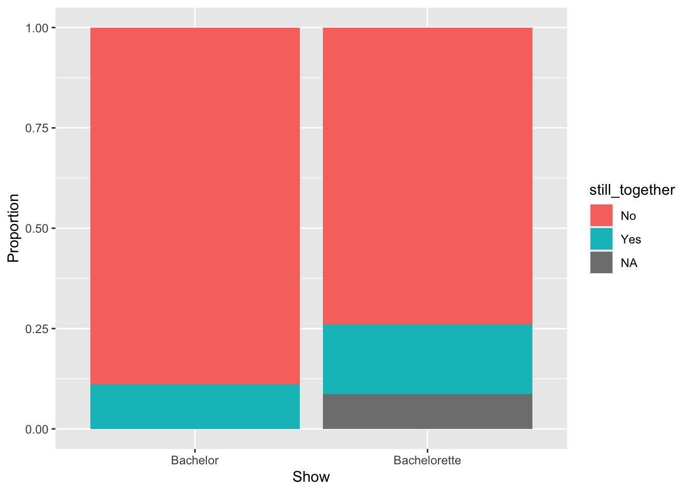
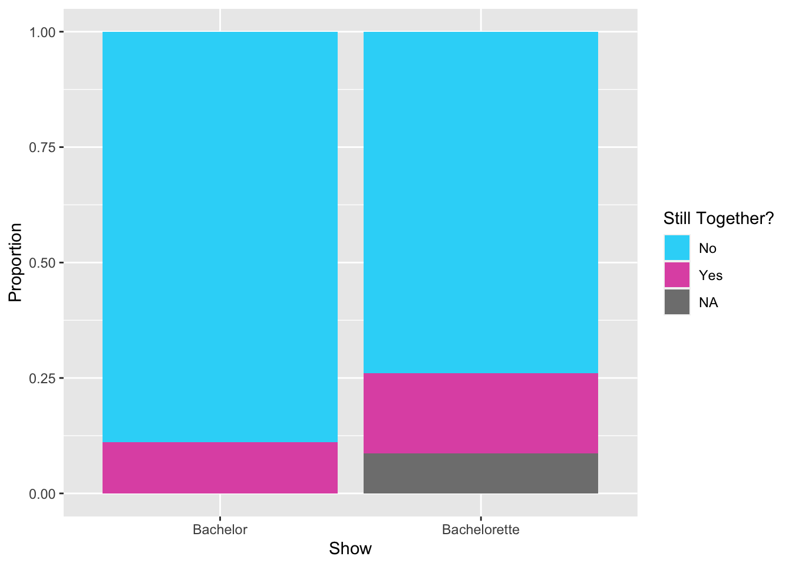
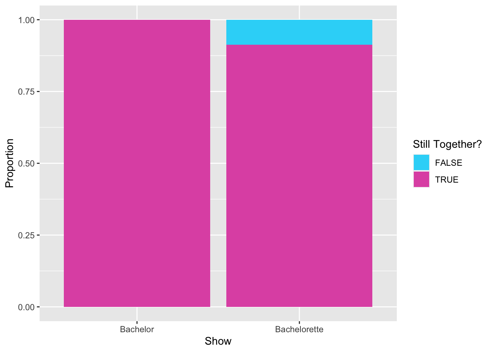
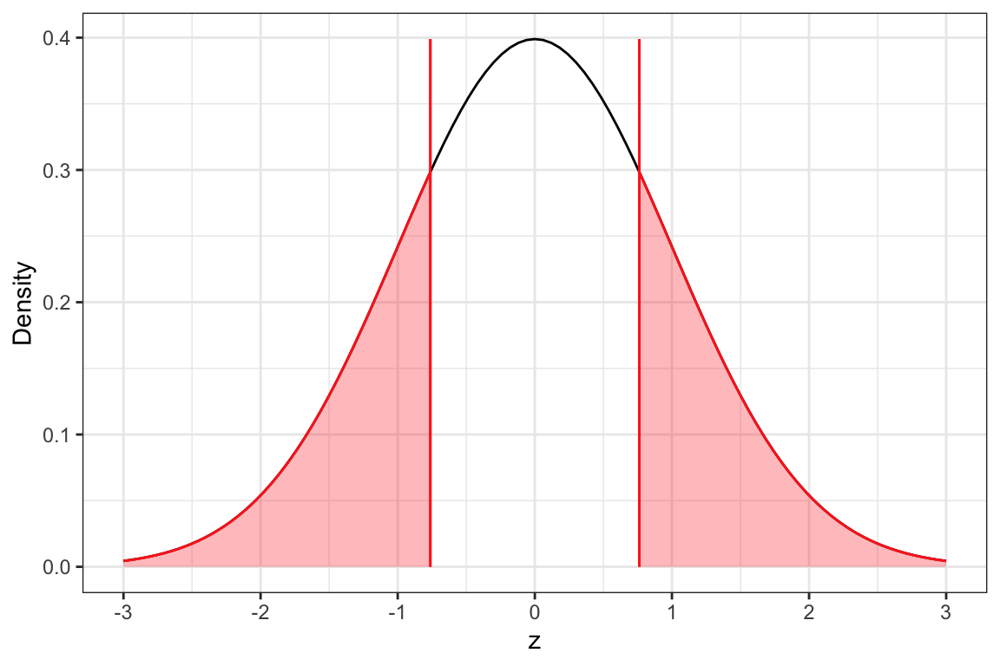
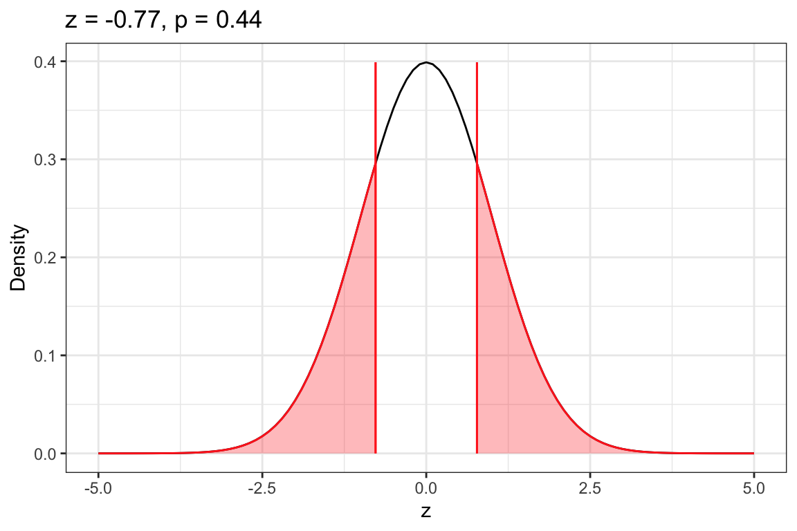

library(educate)
library(ggformula)
library(mosaic)
library(mosaicCore)
library(tidyverse)
# Import data
bachelor <- read_csv("https://raw.githubusercontent.com/zief0002/epsy-5261/main/data/bachelor.csv")
# View data
bachelor15 Two-Sample z-Test: Evaluating Differences in Proportions From Two Samples
In this chapter you will learn about how to use a two-sample z-test to statistically compare a proportion computed in two samples of data by accounting for the sampling uncertainty. You will also learn about the assumptions that we need to make in order for the results of a two-sample z-test to be statistically valid.
15.1 Case Study: Still Together?
In Chapter 13 we examined whether there were differences in the average age of those people selected to be The Bachelor and those selected to be The Bachelorette. Here, we will continue our data analysis of these reality shows by examining whether the Bachelors or Bachelorettes were more successful in their selection of potential mates by determining whether the proportion of couples that are still together is different for the Bachelors and Bachelorettes.
The data in bachelor.csv contains the attribute still_together which is a categorical variable indicating whether the Bachelor or Bachelorette is still together with the person they selected (at least as of June, 2023). We will use this attribute, along with the show attribute to evaluate the following set of hypotheses:
\[ \begin{split} H_0: \pi_{\text{Bachelor}} = \pi_{\text{Bachelorette}} \\[1ex] H_A: \pi_{\text{Bachelor}} \neq \pi_{\text{Bachelorette}} \end{split} \] where \(\pi_{\text{Bacheor}}\) is the proportion of all Bachelor contestants that are still together with the person they chose, and \(\pi_{\text{Bacheorette}}\) is the proportion of all Bachelorette contestants that are still together with the person they chose. (Reminder that it is convention to indicate the group you are hypothesizing the proportion for in the subscript of \(\pi\).)
Your Turn
Similar to hypotheses we wrote for the two-sample t-test, hypotheses in which we compare two samples’ proportions can also be written as differences. Re-write the null and alternative hypotheses as differences.
To answer this question, we can compare the proportion of Bachelor and Bachelorette contestants in the sample that are still together with the person they chose, and then carry out a two-sample z-test to see if any differences we observed in the sample data are just due to sampling error. To begin, we will load a few libraries and import the data.
15.1.1 Summarizing the Sample Data
We will start the analysis by summarizing the still_together attribute to determine the proportion of Bachelor and Bachelorette contestants that are still together with the person they selected on the show. We will use the vertical bar (|) to condition the still_together attribute by show in the tally() function. To get proportions, we also include the extra argument format="proportion".
# Syntax to compute the number of contestants that are still together for each category in the show attribute
tally(~still_together | show, data = bachelor) show
still_together Bachelor Bachelorette
No 24 17
Yes 3 4
<NA> 0 2# Syntax to compute the proportion of contestants that are still together for each category in the show attribute
tally(~still_together | show, data = bachelor, format = "proportion") show
still_together Bachelor Bachelorette
No 0.88888889 0.73913043
Yes 0.11111111 0.17391304
<NA> 0.00000000 0.08695652These summaries indicates that in 2018, the proportion of Bachelor contestants that are still together with their selected suitor is 0.11, while the proportion of Bachelorette contestants that are still together with their selected suitor is 0.19. We would again use the notation \(\hat{p}\) along with a subscript to denote the sample proportions:
\[ \hat{p}_{\text{Bachelor}} = .11 ~~~~~~~~~~ \hat{p}_{\text{Bachelorette}} = .19 \]
15.1.1.1 Missing Data
One other thing we see is that there are 2 NA values in the counts and proportions. This is telling us that two cases in our data are missing values on the still_together attribute. Looking back at the CSV file, we find that two of the Bachelorette contestants, Britt Nilsson and Charity Lawson are missing values on the still_together attribute. In any analysis involving the still_together attribute, that will mean that these two cases will be dropped.
The proportions in the tally() output are based on the complete number of contestants within each show. For example, the proportion of 0.74 indicating the proportion of Bachelorette contestants that are not still together is based on the total number of Bachelorette contestants (\(n=23\)). Because our two-sample z-test will only be based on those contestants who have data, it is common to base the sample proportions on only those contestants that have data (e.g., based on the \(n=21\) Bachelorettes with data. To compute these proportions, we will include the argument useNA="no" in the tally() function.
# Syntax to compute the proportion of contestants that are still together for each category in the show attribute
# Compute only for those contestants with data
tally(~still_together | show, data = bachelor, format = "proportion", useNA = "no") show
still_together Bachelor Bachelorette
No 0.8888889 0.8095238
Yes 0.1111111 0.1904762Now, the proportion of 0.81 indicating the proportion of Bachelorette contestants that are not still together with their selected suitor is based on the number of Bachelorette contestants with data (\(n=21\)).
While the tally() function includes an argument to only use those cases with data, not all R functions have this utility. Some will drop the cases without telling you, and others will not work at all with missing values. The latter is the case with the prop_test() function we will use later. We will look at solutions to this problem later in this chapter when we introduce the syntax for the two-sample z-test
15.1.1.2 Reporting Sample Results: Contingency Tables
In reporting the sample results, we typically only need to report the sample values for one category of the outcome (e.g., the proportion that are still together). However, many manuscripts will also report the inverse of these values as well (e.g., the proportion who are NOT still together). Table 15.1 shows an example of a table summarizing the counts and proportions that might by produced in a manuscript.
Warning: Since gt v0.3.0, `columns = TRUE` has been deprecated.
• Please use `columns = everything()` instead.| Show | Not Together | Still Together |
|---|---|---|
The table in Table 15.1 is called a contingency table. Contingency tables typically report counts, proportions, or both. They also often include total counts (the row and column highlighted in yellow). The first two total values in the column labelled “Total” are the total number of contestants on each show—27 total contestants on the Bachelor and 21 total contestants on the Bachelorette—these are called row totals since we are summing across the rows. The first two total counts in the row labelled “Total” indicate the total number of contestants across both shows that are no longer together and the total number across both shows that are still together—41 contestants are no longer together with the suitor they selected, while 7 are still together with their chosen suitor—these totals are referred to as column totals as they constitute the sum in different columns. Finally, the count in the last row and last colum (48) indicated the total number of contestants. Sometimes this value is referred to as the grand total or the total sample size.
When you are interpreting the information from the contingency table, especially proportions, it is important to note which total was used in the denominator of the proportion. For example, if we were trying to compute a proportion of the Bachelor contestants that are still together with their selected suitor (\(n=3\)), we have three ways we could compute a proportion:
- \(\frac{3}{27} = .11\) This proportion uses the row total in the denominator and is the proportion that is reported which indicates the proportion of all Bachelor contestants that are still together with their selected suitors.
- \(\frac{3}{7} = .43\) This proportion uses the column total in the denominator. It indicates the proportion of all contestants that are still together with their selected suitors that are Bachelor contestants.
- \(\frac{3}{48} = .06\) This proportion uses the grand total in the denominator. It indicates the proportion of all contestants that are Bachelor contestants and are still together with their selected suitor.
The key is, of course, to report the proportions that help you answer your research question. Since we were interested in differences between shows, we want to compute the proportion of contestants still together within each show. That is why we used the row total in the denominator. Because a proportion can be computed in these multipe ways, it is good practice to report how the proportions are being computed in the table caption or a table note.
15.1.1.3 Reporting Sample Results: Segmented Bar Charts
Sometimes the summary results are reported in a visualization. One common visualization used to report counts or proportions for multiple groups is the segmented bar chart. Here we use the gf_props() function to plot the proportions of contestants still together (and not still together) within each show. To do this we give:
- A formula (
~) indicating the attribute to compute proportions within. In this case we used~showbecause we want to compute the proportion within each show. This will create a separate bar for each show. data=indicates the name of the data frame.fill=gives a formula for how to color fill each bar. Since we usedfill=~still_together, each bar will be color filled based on the values in thestill_togetherattribute.position="fill"will make the bars comparable by creating a full range within each showxlab=andylab=indicate the labels you wan on the x- and y-axes, respectively
# Syntax to create a segmented bar chart for the still_together attribute
# A seperate bar is show for each show
gf_props(
~show, data = bachelor,
fill = ~still_together,
position = "fill",
xlab = "Show",
ylab = "Proportion"
) 
The default colors used to fill in the bars are not aesthetically pleasing. We can change these by adding the scale_fill_manual() function to the end of our plot syntax. Here we change the name of the legend title by including the name= argument in this function. We also need to include the argument values= which sets the colors we want to use within a c() function. Because there are three colors used, we provide the names or codes for three colors within this c() function. Here I used Hex Codes to define the three colors. (You can learn more about and explore Hex Codes for colors here.)
# Syntax to create a segmented bar chart for the still_together attribute
# A seperate bar is show for each show
gf_props(
~show, data = bachelor,
fill = ~still_together,
position = "fill",
xlab = "Show",
ylab = "Proportion"
) +
scale_fill_manual(
name = "Still Together?",
values = c("#2dd7f8", "#e059b2", "#686868"),
)
Remember different visualizations use color= or fill= to set the color. The gf_props() function uses fill= to set the fill color of the bars; color= would set the color of the bar outline. Because we used fill= in our gf_ function, we use scale_fill_manual() to define the colors and change the legend title. If instead we had used color= in our gf_ function we would have to use scale_color_manual().
Lastly, we point out that these visualizations included the Bachelorettes with the missing values in the stiltogether attribute (e.g., the proportions are based on \(n=23\) Bachelorette contestants). If you want to omit the missing values we need to add some syntax in the gf_ function everytime we use the still_together attribute. Rather than using fill=~still_together, we want to fill based on only those values that are not missing. To do that we set this argument to: fill=~!is.na(still_together). The is.na() function identifies all the cases that are missing is the still_together attribute and the ! at the beginning tells fill= to only use those values that are NOT missing. Then, since there are no more missing vlaues, we would only need to provide two colors to the scale_fill_manual() functin
# Syntax to create a segmented bar chart for the still_together attribute
# A seperate bar is show for each show
# The fill color is only based on non-missing values
gf_props(
~show, data = bachelor,
fill = ~!is.na(still_together),
position = "fill",
xlab = "Show",
ylab = "Proportion"
) +
scale_fill_manual(
name = "Still Together?",
values = c("#2dd7f8", "#e059b2"),
)
The choice of how you report the counts and proportions is up to you. Most manuscripts will either report the contingency table or just include the appropriate proportions in the text itself. For example, a sentence like: “The proportion of Bachelor contestants who are still together with their selected suitor is 0.11, while the proportion of Bachelorette contestants who are still together with their selected suitor is 0.19.” (Note that the proportion who are not still together with their selected suitor can be easily determined and hence does not need to be reported.) A visualization like the segmented bar chart is useful if you have many groups you are reporting proportions for. Since we only have two groups we are comparing, a table or text is simpler.
15.1.2 Testing Proportions Using the One-Sample z-Test
The sample data suggest that there is is a difference between the two shows in the proportion of contestants that are still together with their selected suitor (\(0.11 \neq 0.19\)). The next question we would want to tackle is whether this difference is more than we expect because of sampling error. To determine this, we need to carry out a hypothesis test.The hypothesis test we use to compare two samples’ proportions is the two-sample z-test. The process we use is very similar to that for the one-sample z-test, which was:
- Use the difference in sample proportions to compute a z-value;
- Locate the observed z-value in the z-distribution; and
- Determine the p-value by computing the area under the curve in the z-distribution that is at least as extreme as the observed t-value based on the alternative hypothesis.
To compute the z-value, we use:
\[ z = \frac{\hat{p}_1 - \hat{p}_2}{SE_{\hat{p}_1 - \hat{p}_2}} \]
where \(\hat{p}_1\) is the sample proportion for group 1, \(\hat{p}_2\) is the the sample proportion for group 2, and \(SE_{\hat{p}_1 - \hat{p}_2}\) is the standard error for the difference in proportions. This SE is computed as:
\[ SE_{\hat{p}_1 - \hat{p}_2} = \sqrt{\frac{\hat{p}_1(1 - \hat{p}_1)}{n_1} + \frac{\hat{p}_2(1 - \hat{p}_2)}{n_2}} \]
where again, \(\hat{p}_1\) is the sample proportion for group 1, \(\hat{p}_2\) is the the sample proportion for group 2, and \(n_1\) and \(n_2\) are the sample sizes for group 1 and 2, respectively. In our example, the z-value is:
\[ \begin{split} z &= \frac{.11 - .19}{\sqrt{\frac{.11(1 - .11)}{27}} + \sqrt{\frac{.19(1 - .19)}{21}}} \\[2ex] &= \frac{-.08}{.105} \\[2ex] &= -0.762 \end{split} \]
The z-value indicates how many standard errors the sample difference is from the hypothesized difference of 0, In our case, the difference in sample proportions we observed in the data was \(-.08\). (The negative value just tells us that the Bachelorette group has a higher proportion still together with their selected suitor.) This difference is 0.762 standard errors below the hypothesized difference of 0. We can evaluate this in the z-distribution. (Remember the z-distribution is a normal distribution that has a mean of 0 and a standard deviation of 1.)
The z-distribution is shown in Figure 15.1. A vertical line is shown at the observed z-value of \(-0.762\). The area under the curve associated with the pvalue for the alternative hypothesis that the difference is not equal to 0 is also shown.

In practice, we will use the prop_test() function from the {mosaic} package to carry out the two-sample z-test and compute the p-value. This function takes:
- A formula using the tilde (
~) , that specifies the attribute to carry out the two-sample z-test on. We also need to specify the level of the attribute we want to compute the sample proportion for using==and then giving the exact name for that level inside quotation marks. Finally, we also use the vertical bar (|) to indicate the attribute we want to compare. data=specifying the name of the data object,alternative=indicating one of three potential alternative hypotheses:"less","greater", or"two.sided"(not equal). Note that these need to be enclosed in quotation marks.correct=FALSEindicating that we want to do the calculation of the z-value without a correction for continuity which will mimic the formula.
To carry out the two-sample z-test to compare the proportion of Bachelor and Bachelorette contestants still together with their selected suitor, we will use the following syntax. Note that in the formula we also indicate that we want to compute the sample proportion for the "Yes" values of the still_together attribute. We assign the results of this z-test to an object (in this case, I called it my_z).
# Two-sample z-test
my_z <- prop_test(
~still_together == "Yes" | show,
data = bachelor,
alternative = "two.sided",
correct = FALSE
)Error: still_together == "Yes" has 3 levels (including NA). Only 2 are allowed.If we try running this syntax we get an error message: “Error: still_together == "Yes" has 3 levels (including NA). Only 2 are allowed.” As we stated earlier, this function cannot handle missing values in the data. The error message is saying that the NA values are being treated as a separate category and the function can only handle dichotomous attributes. There are a couple of options for dealing with the missing data:
- Remove the cases with missing values from the data.
- Enter the counts in the
prop_test()function manually.
If you decide to remove cases from the data, you can open the CSV file using Excel or some other spreadsheet program, delete the two cases that are missing data in the still_together attribute, and save the data file (be sure you save it as a CSV file). Then you would need to import the edited data and use that data to carry out the two-sample z-test.
The second option is to enter the information for the two-sampe z-test into the prop_test() function manually. To do this we need the counts of the Bachelor and Bachelorette contestants that are still together with their selected suitors (\(n=3\) and \(n=4\), respectively) and the total count of Bachelor and Bachelorette contestants (\(n=27\) and \(n=21\), respectively). Note that these counts are available in the contingency table! We enter these values into the arguments:
x=takes a vector of the counts that are still together in thec()functionn=takes a vector of the total Bachelor and Bachelorette counts in thec()function
Because we are enter in the counts manually, we do not include a formula or data= argument. The syntax to enter the counts manually in the prop_test() function is:
# Two-sample z-test with counts entered manually
my_z <- prop_test(
x = c(3, 4),
n = c(27, 21),
alternative = "two.sided",
correct = FALSE
)Warning in stats::prop.test(x = x, n = n, p = p, alternative = alternative, :
Chi-squared approximation may be incorrectThen we can use the z_results() and plot_z_dist() functions (both from the {educate} package) to show the results of the z-test and plot the z-distribution along with the observed z-value and shaded area associated with the p-value.
# Plot z-distribution, observed z-value and shaded p-value
plot_z_dist(my_z)
# Show z-test results
z_results(my_z)
--------------------------------------------------
2-sample test for equality of proportions without continuity correction
--------------------------------------------------
H[0]: pi_1 = pi_2
H[A]: pi_1 ≠ p1_2
z = -0.7728597
p = 0.4396054
--------------------------------------------------
Based on the p-value, and using an \(\alpha\)-value of .05, we would fail to reject the null hypothesis. This suggests it is likely that the proportion of Bachelor contestants who are still together with their selected suitor is NOT different than the proportion of Bachelorette contestants who are still together with their selected suitor.
15.2 Assumptions for the Two-Sample z-Test
Whether or not the p-value we obtain from the z-test is accurate depends on the following set of statistical assumptions:
- The values in the two populations both follow a binomial distribution. This is true so long as there are only two values the attribute can take on (e.g., “Yes” or “No”) for each group being compared.
- The values in the population are independent from each other.
- For both groups, the quantities \(n(\hat{p})\) and \(n(1-\hat{p})\) are both greater than 10, where n is the sample size used in the group and \(\hat{p}\) is the sample proportion value.
To evaluate the first assumption that the distribution of values in the population follow a binomial distribution, we only need to confirm that the population only has two values. In our example, this is true; the only two values a case can have is “Yes” (they are still together with their selected suitor) or “No” (they are not still together with their selected suitor).
We will evaluate the independence assumption by referring to the study design. In our example, the cases in the data do not constitute a random sample of all Bachelor and Bachelorettes. We also have not randomly assigned some people to be the Bachelor and others to be a Bachelorette. Because we have not employed randomness in the study design to select cases or assign them to groups, we need to make a logical argument that knowing a Bachelor’s (or Bachelorette’s) value on the still_together attribute does not give us any information about any other Bachelor’s (or Bachelorette’s) value on the still_together attribute. Without additional data it is difficult to know, so we could argue that the independence assumption seems tenable.1
Lastly we compute the quantities in the third assumption and check that they are all greater than 10.
\[ \begin{split} \mathbf{Bachelor}\\ n(\hat{p}) &= 27(.11) \\[1ex] &= 2.97 \\[3ex] n(1-\hat{p}) &= 27(1 - .11) \\[1ex] &= 24.03 \\[7ex] \mathbf{Bachelorette}\\ n(\hat{p}) &= 21(.19) \\[1ex] &= 3.99 \\[3ex] n(1-\hat{p}) &= 21(1 - .19) \\[1ex] &= 17.01 \end{split} \] This assumption does not seem tenable since two of the four values were less than 10. This violation may indicate that the p-value computed might not be accurate.
There are methods we can use to get a more accurate p-value when assumptions are violated. These methods can be Googled or you can learn about them in other courses (e.g., EPSY 8251 and 8252).
Just remember other scholars might argue that the population values are not independent.↩︎